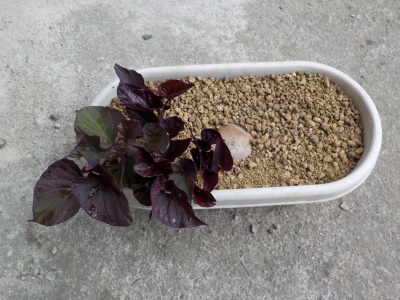
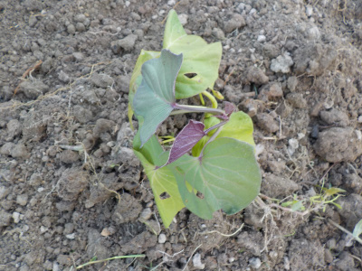
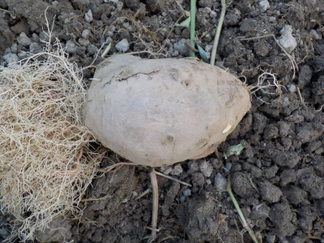
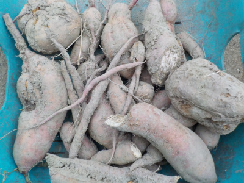
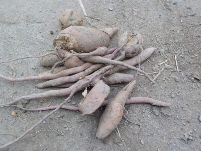

更新日 : 2023/05/28

去年収獲したサツマイモで、食べ忘れていたものがあったので小さなプランターに埋めていました。
寒さ対策をして保存していたのではないので、たぶん痛んでいて食用は無理なモノです。
最初、赤紫蘇の種が飛んで来て生えているんだろうと思っていたら、サツマイモの芽でした。
既に畑にはサツマイモの苗を植え終わっているので、今頃出てきてもなーな感じです。
更新日 : 2023/08/05

早く植えなきゃと思っていましたが、ツルがあんまり伸びなかったの8月になりました。
今頃植えてどうなるでしょうね？。絶対失敗でしょうって思うんですが、意外なことをしているのでワクワク感があって楽しいです。
収獲は11月くらいかな。

ツルの親芋は古くなって腐るとか、ツルに養分を取られて縮むんじゃないかと思ったんですが、硬くて新鮮そうな感じでした。
なんか大きくなってる気がする。これも苗の近くに埋めました。こっちの今後も楽しみです。
更新日 : 2023/11/26

去年収獲したサツマイモを使ってツルを作り、それを育てて収獲までいきました。
ちょっと小さかったり不格好だったりしますが、8月に地植えしたものがここまで育って収獲できれば十分な気がします。
味は普通にサツマイモで美味しかったです。

この小さいサツマイモは、来年ツルを育てるのに使おうと思っています。
寒さで芋がダメにならないといいですが、どうかな？。あと、小さくてもツルは出るかな？。実験ですね。
サツマイモの無限栽培です。
【おいしいものを食べよう。】【たくさん寝よう。】
【ソロ活をしよう!】【季節感のあることをしよう。】【動画視聴はほどほどに。】【当サイトの全てのコンテンツは無断転載禁止です。】